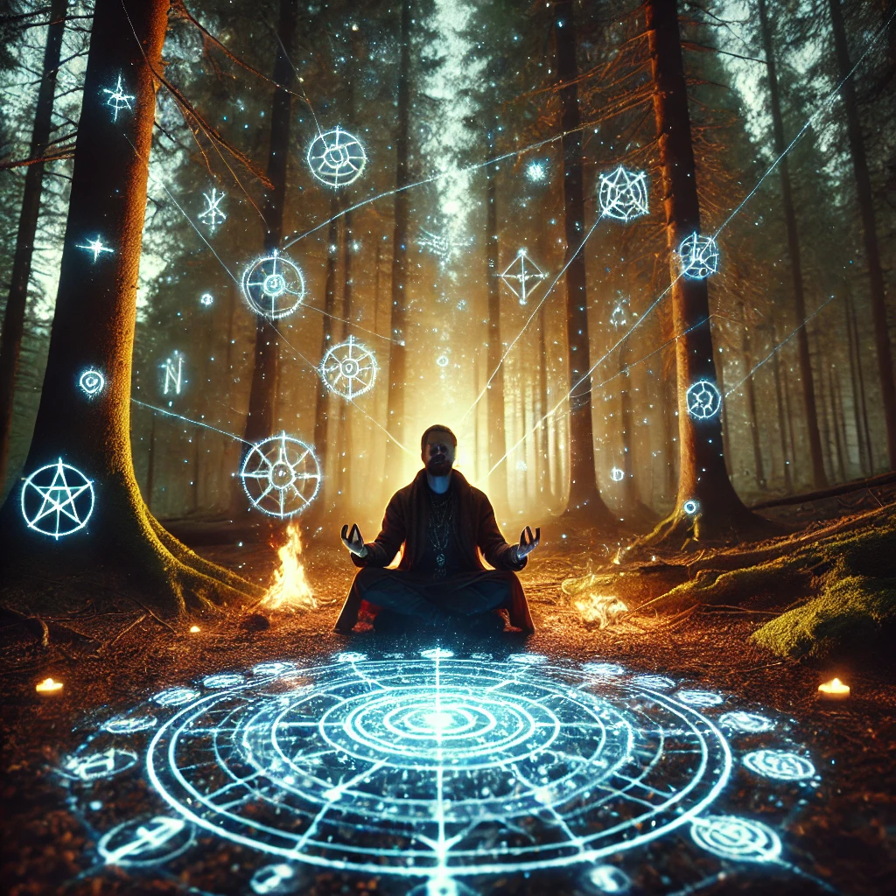

The path through the forest leads you to a clearing where a shaman waits, their eyes glowing faintly as if reflecting the wisdom of the stars. They sit cross-legged, surrounded by symbols drawn in the dirt and a faint glow of otherworldly energy.
“You seek answers,” the shaman says, their voice both soft and commanding. “The compass speaks of a path, but understanding its language requires connection to the unseen. Tell me—what do you wish to learn?”
The shaman gestures to the glyph-covered compass in your hands. As you show it to them, the symbols begin to glow brighter, pulsing in rhythm with your heartbeat. The shaman closes their eyes, breathing deeply, and offers you guidance:
“The glyphs reveal much, but their meaning is shaped by the seeker. Will you follow their pull, question their purpose, or seek to unlock their secrets?”

How will you proceed?